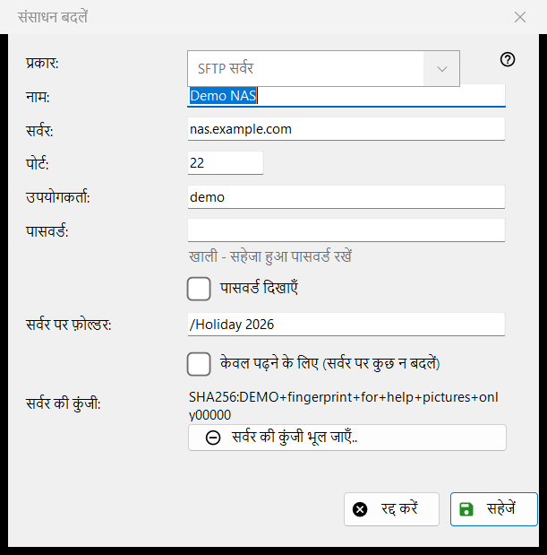
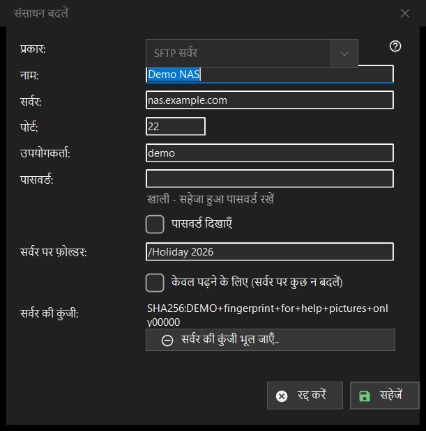

संसाधन बदलें
यह किस लिए है
एक सहेजे गए सर्वर या नेटवर्क फ़ोल्डर का फ़ॉर्म। संसाधन सूची में जोड़ें.. इसे खाली खोलता है और शीर्षक नया संसाधन होता है, संपादित करें.. इसे भरा हुआ खोलता है और शीर्षक संसाधन बदलें होता है, और फ़ोल्डर बॉक्स में टाइप किया गया sftp:// पता इसे पहले से भरा हुआ खोलता है।


इस क्रम में
- प्रकार चुनें: SFTP सर्वर या नेटवर्क फ़ोल्डर (SMB)।
- संसाधन को एक नाम दें और सर्वर का पता व पोर्ट, या नेटवर्क पथ दर्ज करें।
- उपयोगकर्ता नाम और पासवर्ड दर्ज करें।
- सर्वर पर फ़ोल्डर तय करें और, यदि वहाँ कुछ नहीं बदलना चाहिए, तो केवल पढ़ने के लिए पर निशान लगाएँ।
- सहेजें दबाएँ।
तत्व
प्रकार
प्रकार फ़ील्ड संसाधन बनाते समय चुना जाता है: SFTP सर्वर (पोर्ट 22, फ़ोल्डर /) या नेटवर्क फ़ोल्डर (SMB)। सहेजे गए संसाधन के लिए यह सूची अक्षम रहती है, क्योंकि सहेजा गया पासवर्ड और सर्वर की कुंजी एक ही प्रकार की होती हैं। SMB के लिए पता फ़ील्ड का नाम नेटवर्क फ़ोल्डर होता है और वह \\server\folder जैसा पथ लेता है; पोर्ट और फ़ोल्डर फ़ील्ड केवल SFTP के लिए हैं।
नाम, सर्वर और पोर्ट
नाम फ़ील्ड वही है जो सूची दिखाती है; खाली होने पर सर्वर का पता उपयोग होता है। सर्वर फ़ील्ड में नाम या IP पता होता है और पोर्ट फ़ील्ड में 1 से 65535 तक की संख्या। सर्वर या पोर्ट बदलने पर आयात किए गए संसाधन के साथ आए बाकी पते हट जाते हैं, ताकि सहेजा हुआ पासवर्ड कभी ऐसे पते पर न जाए जो आपने दर्ज नहीं किया।
उपयोगकर्ता और पासवर्ड
उपयोगकर्ता और पासवर्ड फ़ील्ड। पासवर्ड आपके Windows खाते के लिए एन्क्रिप्ट करके सहेजा जाता है; सूची में केवल उसका संदर्भ रहता है। सहेजे गए संसाधन के लिए बॉक्स खाली रहता है और उसमें संकेत खाली - सहेजा हुआ पासवर्ड रखें दिखता है: कुछ तभी लिखें जब उसे बदलना हो। पासवर्ड दिखाएँ विकल्प शुरू में बंद रहता है। नए संसाधन के लिए पासवर्ड ज़रूरी है।
फ़ोल्डर और केवल पढ़ने के लिए
सर्वर पर फ़ोल्डर वह फ़ोल्डर है जिसे व्यूअर सबसे पहले खोलता है, जो / से शुरू होने वाला पथ है। केवल पढ़ने के लिए (सर्वर पर कुछ न बदलें) विकल्प व्यूअर को संसाधन केवल-पढ़ने वाला मानने को कहता है: उसमें कुछ भी मूव या कॉपी नहीं किया जा सकता, और उसमें कुछ डिलीट या नाम नहीं बदला जा सकता।
सर्वर की कुंजी
सर्वर की कुंजी फ़ील्ड इस सर्वर के लिए याद रखा गया फ़िंगरप्रिंट दिखाती है, या बताती है कि वह पहले कनेक्शन पर दिखेगा, जहाँ आप उसे पक्का करते हैं। सर्वर की कुंजी भूल जाएँ.. बटन तभी दिखता है जब कोई कुंजी याद रखी गई हो। यह पहले पूछता है (डिफ़ॉल्ट उत्तर नहीं है) और समझाता है: सर्वर दोबारा इंस्टॉल हुआ हो तो यह सामान्य है, वरना कोई उसका रूप धर रहा हो सकता है। यह केवल कुंजी मिटाता है: अगला कनेक्शन नया फ़िंगरप्रिंट दिखाएगा और फिर पूछेगा।
सहेजें
सहेजें फ़ील्ड जाँचता है और उनके नीचे लाल रंग में पहली समस्या बताता है: पता, पोर्ट, फ़ोल्डर, उपयोगकर्ता नाम या छूटा हुआ पासवर्ड। रद्द करें बिना बदलाव के फ़ॉर्म बंद कर देता है।